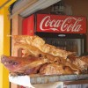
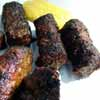
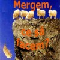

Mai multe informaţii aici.

Iată cum arată anul 2011 în viziunea Google, care alcătuieşte Zeitgeist (spiritul vremurilor), un raport care pune cap la cap miliardele de căutări ale utilizatorilor de Internet. Zeitgeist 2011 evaluează obiceiurile şi tendinţele de căutare globale sau regionale. România: piţipoance, manelişti şi vedetele altora Dacă analizăm sumar obiceiurile de căutare ale utilizatorilor de Internet localizaţi în România, observăm [...]
Cercetătorii universităţilor Reading şi Plymouth au dezvoltat un sistem care permite unui calculator să „citească” starea sufletească a oamenilor şi să aleagă muzica în funcţie de dispoziţia ascultătorilor. Descoperirea s-ar putea dovedi utilă ca adjuvant în tratamentul depresiilor. Folosind un electroencefalograf, aparatul detectează impulsurile electrice generate de creier şi le trimite unui computer, care, analizându-le, [...]

Viaţa lui Dan Octavian Vişan ar putea fi mai grea odată cu expirarea, pe 17 decembrie, a mandatului de arestare emis pentru 29 de zile. Dacă va ieşi din arest, fostul profesor de sport va câştiga la capitolul libertate şi confort, dar va pierde siguranţa pe care i-o asigurau, gratuit, gardienii, intrând într-un joc periculos. [...]
Kursk nu e doar numele celebrului submarin nuclear rusesc scufundat, ci şi oraşul în care se află probabil cel mai sexy magazin de telefoane mobile din lume. Că ruşii au (cu) ce vinde, e clar. Se pare însă că au găsit şi metoda prin care să scoată profit din istoria recentă. Magazinul în care vânzătoarele [...]

Asociaţia Brokerilor de pe piaţa de capital vă invită să fugiţi de bursa românească şi mai ales de brokerii români. Cel puţin asta înţelege orice om de bun simţ urmărind clipul de…promovare pentru Gala Premiilor Pieţei de Capital 2011, realizat de agenţia Propaganda. Cât de inconştient trebuie să fii încât să „promovezi” investiţia la bursă cu [...]

Câteva sute de foşti revoluţionari şi rude ale acestora din Blocul Naţional al Revoluţionarilor au încurcat circulaţia în mijlocul Bucureştiului (Piaţa Universităţii), bătându-se cu jandarmii, întrucât manifestau ilegal. Le spun „foşti revoluţionari” pentru că, din câte ştiu eu, nu avem vreo revoluţie în desfăşurare. Cel puţin nu pe plaiuri mioritice. Recent, Legea 410/2011, adoptată în noiembrie [...]

Luna decembrie este „luna cadourilor şi a bucuriei”. Obligatoriu! Primarul, administratorul blocului, vânzătoarea de la mall, cârciumarul din colţ, editorii şi reporterii, nevestele de fotbalişti, toţi se întrec să-ţi bage fericirea pe gât. Nu contează că eşti chinez, arab, evreu sau ateu, „spiritul Sărbătorilor şi minunea Naşterii Domnului” te urmăresc mai ceva ca Fiscul. Deschizi [...]
Avem 494 de români numiţi Bounegru şi 83 de Boubătrân, în vreme ce conaţionalii numiţi Jegu sunt doar 51, numele Nespălatu fiind (pe nedrept) sub-reprezentat, numai 8 persoane numindu-se astfel. Aşa ne anunţă Gândul, care citează DEPABD, instituţie care a centralizat cele mai haioase nume româneşti. Totuşi, consumăm în medie doar 4 (patru) săpunuri pe [...]

Patronul restaurantului La Cocoşatu‘, Ioan Oiţă, a gustat pentru prima oară în viaţă din renumiţii mititei serviţi de localul său, situat în cartierul bucureştean Băneasa. Reacţia sa a fost aceasta. Situat în sectorul 1 al capitalei, restaurantul bucureştean a fost intens promovat mediatic. Mititeii produşi şi livraţi (de) La Cocoşatu sunt extrem de apreciaţi, în ciuda [...]

Neputinţă să fie, că asupritori se găsesc pe toate drumurile. Românii sunt victime seculare. Ale lui Băsescu, ale crizei economice, ale turcilor, italienilor ori francezilor, ale arbitrilor, ale vremurilor totdeauna grele, ale sorţii, ale conspiraţiilor mondiale. E mai simplu să-ţi arunci toate necazurile în cârca unui inamic nedefinit, să-i înjuri pe ăştia şi să organizezi răzmeriţe [...]
Îi mai ţineţi minte pe dătătorii cu părerea profesionişti? Dacă nu, vă invit să citiţi aici povestea lor. Să-i admirăm însă în acţiune, la un articol despre sexul virtual, publicat în revista Kudika. Vom citi despre sex în grup cu o sută de femei, atingeri, miros, telechinezie şi vom râde cu Moş Calabrese. Conţinutul materialului la [...]